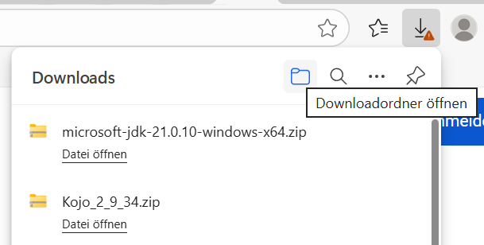
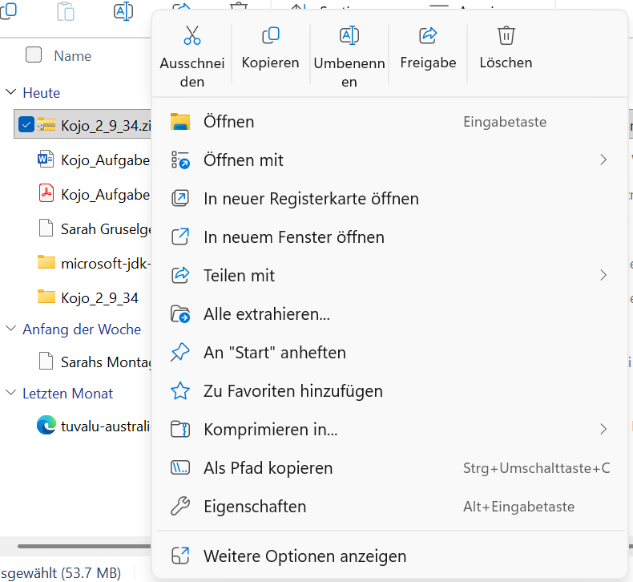
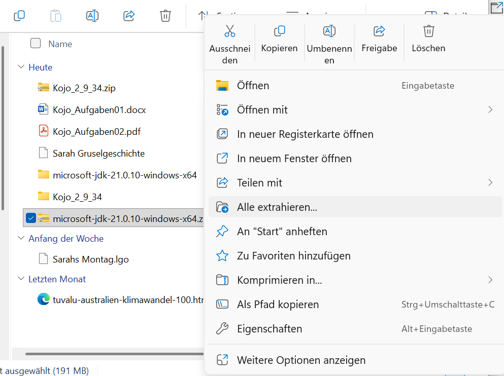
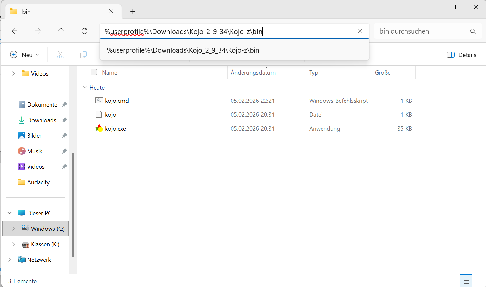
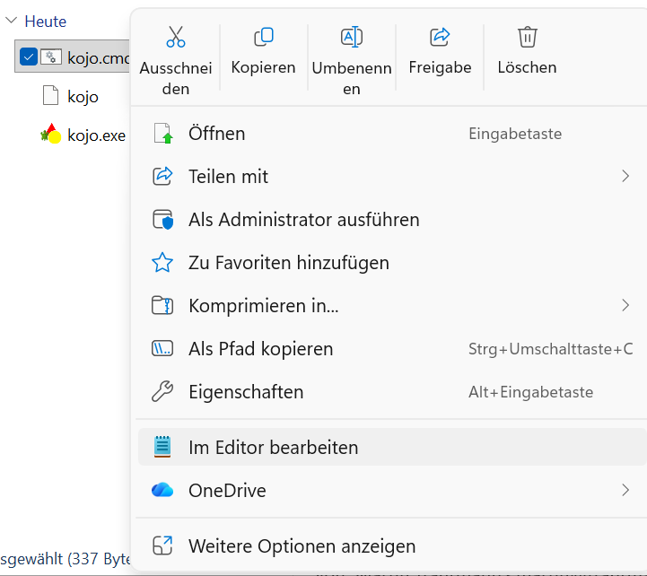
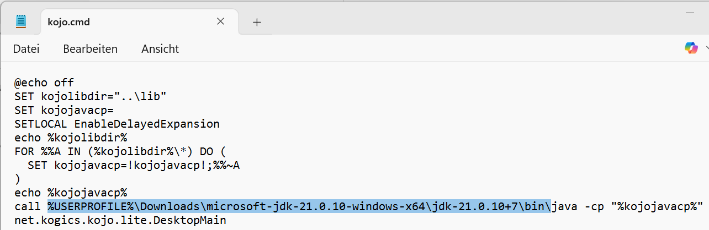
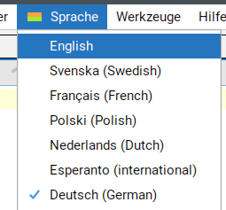
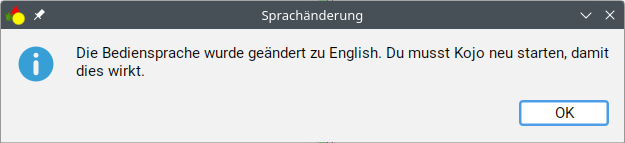

Hallo! 😊
Hier lernst du Schritt für Schritt, wie du Kojo installierst.
Lade Kojo herunter:
👉 Kojo_2_9_34.zip
Die Datei wird in deinem Downloads-Ordner gespeichert.
Kojo braucht Java. Lade es hier herunter:
👉 microsoft-jdk-21.0.10-windows-x64.zip
Die Datei wird in deinem Downloads-Ordner gespeichert.
Wenn Du rechts oben auf den Pfeil nach unten klickst, sieht das so aus:

Wie im Bild dargestellt, gibt es ein Ordner-Symbol rechts von “Downloads” bei dem “Downloadordner öffnen” erscheint, wenn die Maus darüber ist. Damit bitte den Downloadordner öffnen.
Rechtsklick auf Kojo_2_9_34.zip
Dann klicke auf Alle extrahieren…

Rechtsklick auf
microsoft-jdk-21.0.10-windows-x64.zip
Dann klicke auf Alle extrahieren…

Gehe in den Ordner:
%userprofile%\Downloads\Kojo_2_9_34\Kojo-z\bin
So sieht der Ordner aus:

Rechtsklick auf kojo.cmd → Im Editor bearbeiten

Dort steht eine Zeile die mit call java beginnt.
Ersetze das java durch:
%USERPROFILE%\Downloads\microsoft-jdk-21.0.10-windows-x64\jdk-21.0.10+7\bin\java
So sieht das aus:

Wichtig: Speichere die Datei kojo.cmd, bevor du den Editor schliesst. Gehe dazu im Menü auf Datei → Speichern.
Doppelklicke auf kojo.cmd im selben Ordner. Kojo startet jetzt mit dem richtigen Java.
Damit alle im Kurs dieselben Menüs und Begriffe sehen, stellen wir Kojo immer auf Englisch um.
Klicke in Kojo auf: Sprache → Englisch


Danach musst du Kojo selbst schliessen und neu starten.
Damit du Kojo schnell starten kannst, legst du eine Verknüpfung von kojo.cmd auf dem Desktop an.
%userprofile%\Downloads\Kojo_2_9_34\Kojo-z\binDie Verknüpfung erscheint auf deinem Desktop. Du kannst Kojo von dort aus starten.
Jetzt kannst du mit Kojo programmieren! 🎉